About Us
- History and Mission
- About our Logo
- Program Staff
- Board of Directors
- Trainers
- Partners
- Contact Us
- E-mail List
- Team Rooms
- Reports
- AWW Success Stories
History and Mission
What is Alabama Water Watch?
Alabama Water Watch is a citizen volunteer, water quality monitoring program covering all of the major river basins of the state. The mission of AWW is to improve both water quality and water policy through citizen monitoring and action.
Established in 1992, AWW is a national model for citizen involvement in watershed stewardship, largely because of its three interrelated components: citizen monitoring groups, a university-based program, and a non-profit association.
AWW uses EPA-approved monitoring plans with a community-based approach to train citizens to monitor conditions and trends of their local waterbodies.
With a “data-to-action” focus, AWW helps volunteers collect, analyze, and understand their data to make positive impacts.
AWW Vision and Goals
The AWW vision is to have a citizen monitor on every waterbody in Alabama. The goal of AWW is to foster the development of statewide water quality monitoring by:
- Educating citizens about water issues in Alabama and the world.
- Training citizens to use standardized equipment and techniques to gather credible water information.
- Empowering citizens to use their data to protect and restore their local waters.
Training and Certifications
Learn about watersheds, and how to evaluate physical, chemical and biological characteristics of water.
Water Chemistry Monitoring
Test physical and chemical characteristics of water to determine pollution sources and long-term trends in water quality. Six variables are measured with a customized test kit, and results can be compared with water quality standards that define conditions for healthy waterbodies.
Bacteriological Monitoring
Detect levels of E. coli and other coliform bacteria in water as indicators of contamination. Determine if water is safe for drinking, swimming and aquatic life.
Stream Biomonitoring
Assess stream health using “aquatic bugs” (macroinvertebrates) as water pollution indicators. Training combines the use of field collections and an environmental game that simulates a stream bioassessment.
Get Involved
Get Certified as a Water Monitor
Trainings are offered throughout the year statewide. Visit our website or call the program office for details and to register for a workshop.
Put Your Data into Action
Use AWW resources and data to educate others and improve your local waterbodies.
Share Your Experiences
Inspire others by telling them how your actions have made a positive difference.
Join the AWW Association
Become a member of the Association to support statewide watershed stewardship.
About our Logo
It’s not a shrimp… It’s a Water Spirit!
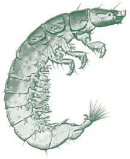
The AWW logo is an aquatic insect called a caddisfly. This particular caddisfly is named Hydropsyche, and is an important member of stream communities throughout Alabama.
The name Hydro-psyche means Water-Spirit.
It is, therefore, a fitting symbol of the growing “spirit” of involvement, enthusiasm and concern for Alabama’s water resources that citizens have shown through Alabama Water Watch.
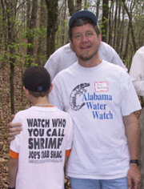 AWW Director, Dr. Bill Deutsch, stands with a student involved in a Living Steams environmental education outing at Camp ASCCA (Tallapoosa County). The shirts say it all!
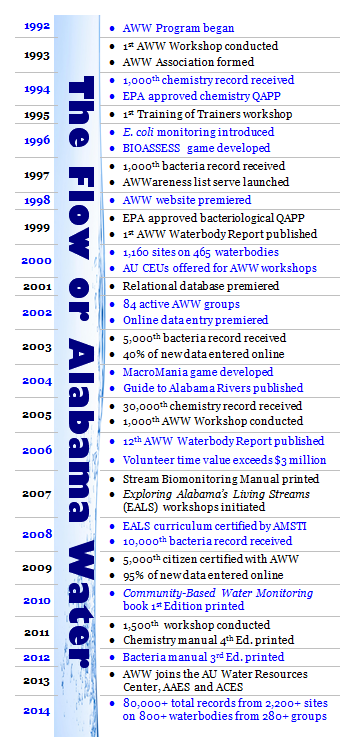
Program Staff
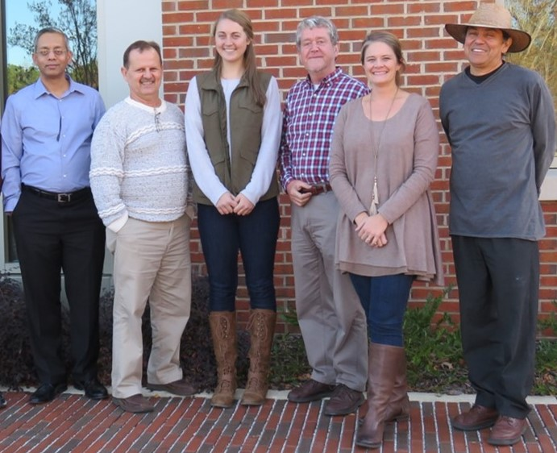
-
William Deutsch, Ph.D.
William Deutsch, Ph.D.
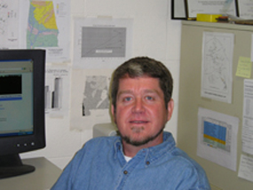
Bill was a Research Fellow in the AU Department of Fisheries and Allied Aquacultures from 1988 to his retirement in 2013. He is now a Research Fellow, Emeritus in the AU School of Fisheries, Aquaculture and Aquatic Sciences, and works part-time for the AU-based programs of Alabama Water Watch and Global Water Watch. Bill is also active with nonprofit organizations, serving on the boards of the AWW Association, the Environmental Education Association of Alabama, and GWW, Inc.
-
Eric Reutebuch, M.S.
Eric Reutebuch, M.S.
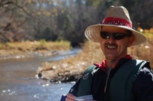
Eric has been on staff at Auburn University since 1988, working 17 years with Dr. David Bayne’s Rivers and Reservoirs Group and with Alabama Water Watch since 1996. He joined AWW full-time in 2006. His work with AWW has involved grant writing, producing outreach and scientific publications and articles, conducting AWW water monitoring workshops, GIS analyses, statistical analyses, standard methods water quality analyses in AWW’s laboratory, and conducting data interpretation sessions with local citizen monitoring groups throughout Alabama. After Dr. Deutsch’s retirement in June 2013, Eric assumed the role of Associate Director of AWW. In June of 2014, he was named Director, and oversees the AWW staff and day-to-day operations of the AWW Program.
-
Sergio S. RuizCórdova, M.S.
Sergio S. RuizCórdova, M.S.
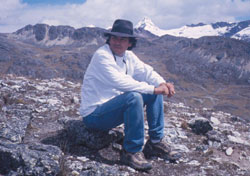
Sergio has a M.S. in Aquatic Ecology from Auburn University. Sergio oversees the activities of the Global Water Watch Program including the implementation of all international projects, the development and maintenance of the database for the Global Water Watch projects in other countries through the Water Resources Center and the International Center for Aquaculture and Aquatic Environments. His work with AWW primarily involves data management and reporting. He works closely with citizens of all backgrounds and ages encouraging awareness about water issues and the environment, and conducting water monitoring and community-based, science-based watershed stewardship workshops.
-
Mona Scruggs Dominguez , M.C.P.
Mona Scruggs Dominguez , M.C.P.
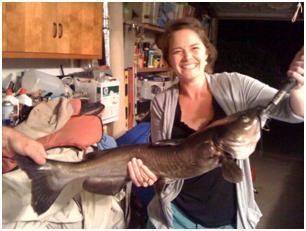
Mona Dominguez has worked with the Alabama Water Watch and Global Water Watch Programs since 2009. Currently she coordinates the 4-H Alabama Water Watch Program. Her responsibilities include developing and implementing the youth water monitoring program and hands-on, water–focused, science-based curriculum that supports the program. Since 2010, Mona has been a Volunteer Monitor Coordinator for the Alabama Water Watch Program. In this position she works to develop and implement plans for volunteer retention, develops program materials, coordinates the volunteer trainer program, and promotes public participation in the program. She also works internationally with the Global Water Watch Program to develop and implement community-based water monitoring programs. Dominguez has a B.A. in Anthropology with a concentration in Environmental Studies from the University of the South (Sewanee), and a Masters of Community Planning (M.C.P) from Auburn University. She also served as a, volunteer in the Community and Environmental Conservation Program with the U.S. Peace Corps in Panama.
-
Samantha Daniell
Samantha Daniell
Student Intern
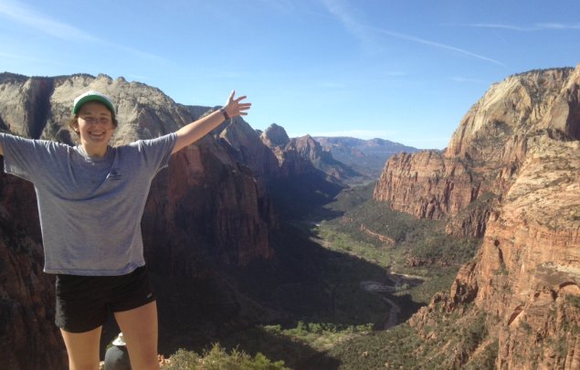
Samantha is currently a senior at Auburn University studying Ecological Engineering. Her main priority is website management, with hopes to become involved with outreach in the future. Samantha seeks to be part of Auburn’s Accelerate Bachelor’s/Masters Program to continue her education after undergrad. She then hopes to obtain a job that involves conservation and awareness.
-
Sydney Smith
Sydney Smith
Student Intern
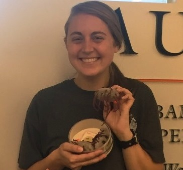
Sydney is currently a Senior in Environmental Science at Auburn University. She began volunteering as a water quality monitor with AWW in 2014 and became a citizen trainer in 2015. Her work with AWW involves communicating and coordinating with volunteer monitors and trainers, preparing for workshops and helping the other program staff where needed. In her future career, Sydney would love to work in environmental education and watershed protection. Ps – she also loves cuddly stuffed E. coli in lieu of having a teddy bear.
Board of Directors
-
Mona S. Dominguez
Mona S. Dominguez
Secretary (June 2010 – present)
Mona is the secretary for the AWWA Board of Directors and is also the Monitor Coordinator for the AWW Program. She has worked at AWW for nearly seven years and is thankful for the opportunity to work with citizens to improve the water quality of her beautiful home state, Alabama. She has a Master’s Degree in Community Planning from Auburn University and has several years’ experience working with environmental conservation and education with domestic and international projects.
-
James Lowery
James Lowery
Board Member (June 2010 – present)
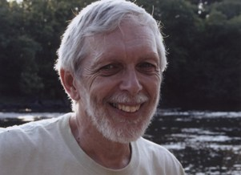
James is retired from an administrative position at the University of Alabama at Birmingham and considers himself an “Amateur Scientist.” He is involved in environmental education and is a member of eight environmental and science-related Boards of Directors and Advisory Councils, serving as an officer on four of the Boards. He gives presentations concerning constructed wetlands for wastewater treatment, creeks and streams he has walked, Antarctica, and the Netherlands. He conducts guided tours of the Wetumpka (Alabama) Impact Crater (Astrobleme). He enjoys paddling whitewater rivers as a member of the Birmingham Canoe Club. James has traveled to Antarctica three times and states that it is his most favorite place on Earth.
-
Bill Deutsch
Bill Deutsch
Board Member (June 1993 – present)
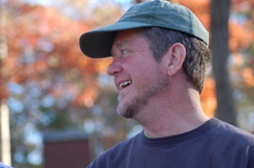
Bill has been on the faculty of the AU Department of Fisheries and Allied Aquacultures since 1988. He is the co-founder of Alabama Water Watch.
-
Mike Mullen
Mike Mullen
Board Member (June 2010 – present)
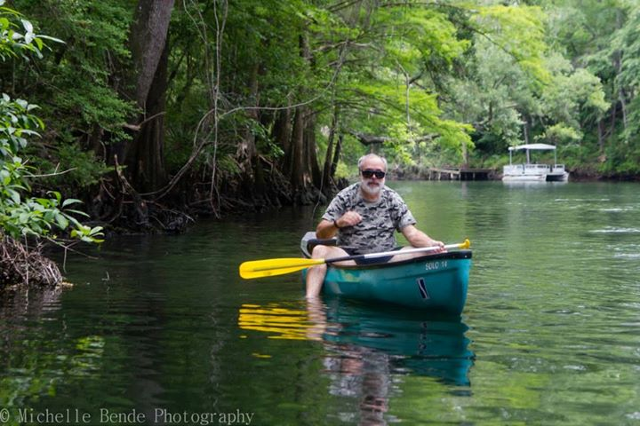
Michael Mullen has been involved in environmental advocacy in Alabama since the early 1980’s when he was active in the Sierra Club working on wilderness expansion and on hazardous waste issues. While under contract with ADEM doing NPS education work including teacher workshops he worked with Patti Hurley and others in the effort to promote volunteer citizen monitoring. He was a founding member of the AWWA and is currently (2015) the AWWA VP. Michael has been an active monitor since just after the start of AWW and currently monitors 54 sites in the Choctawhatchee River basin every other month as part of his work as Choctawhatchee Riverkeeper. He and his wife Alice are committed supporters of Alabama Water Watch.
-
Patti Hurley
Patti Hurley
Board Member (June 2010 – present)
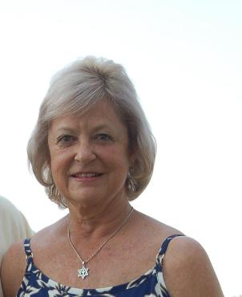
Patti earned a Masters in Secondary Education Ecology, Auburn University at Montgomery, and a B.S. Environmental Biology, Auburn University at Montgomery. She works in the Nonpoint Source Division (NPS). She has also helped to facilitate the organization of the Alabama Water Watch Program to educate citizens about water quality and NPS prevention.
- Michael Freeman
-
Francine Hutchinson
Francine Hutchinson
Board Member
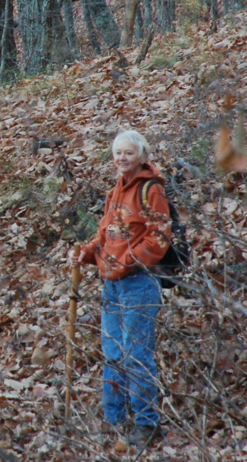
Francine Hutchinson has served as an Environmental Educator and Biology Teacher since 1992, working at the Anniston Museum of Natural History, several local schools, and as one of the “old original” JSU Field School Instructors. A triple-graduate of JSU culminating in a Biology Masters’, Ms. Hutchinson is also a Nationally Board Certified Teacher/Biology, retired. She has served on Board of Directors of Alabama Water Watch Association and the Alabama Environmental Council. She has been active in community environmental issues such as nerve gas incineration, recycling, the Chief Ladiga Trail, and the Choccoloco Creek Watershed Alliance Board. She and her husband Bruce led the successful campaign for Alabama’s third wilderness area, the Dugger Mountain Wilderness, during the 1990’s. She is currently working part-time at the Jacksonville State University Herbarium as Assistant Curator and continues to teach JSU Field School classes. She and her husband share a blended family of 6 children, 12 grandchildren, and two great-grandchildren. They live near the borderlands of the Talladega National Forest on a 40-acre mostly-nature-preserve with 3 rescue dogs, a cat, and 8 chickens.
Trainers
Coastal Trainers
Coastal Plain Streams
- Mike Mullen Email
Mobile Bay Area
Coastal Area
- Robert C. Davis Email
- Liz Langston Email
- Christian Miller Email
- Mike Shelton Email
- Homer Singleton Email
Central Alabama Trainers
Auburn Area
- Bill Deutsch Email
- Mona Dominguez Email
- Rita Grub Email
- Jayme Oates Email
- Eric Reutebuch Email
- Sergio Ruiz Cordova Email
- Wendy Seesock Email
- Michael Freeman Email
- Sydney Smith Email
Birmingham Area
- Hana Berres Email
- Stephen Morros Email
- Taylor Steele Email
- Jim Woodrow Email
- Florence Peters Email
- Gene Grimes Email
Lake Martin Area
Lake Mitchell Area
- Jim Woodrow Email
Lake Wedowee Area
- Bill Boozer Email
Montgomery Area
Pell City Area
North Alabama Trainers
Anniston Area
Cullman County
- Stephen Morros Email
Dekalb and Jackson Counties
- Chip Blanton Email
Huntsville Area
- Susan (Soos) Weber Email
Lake Guntersville Area
Smith Lake Area
- John Kulbitskas Email
Statewide Trainers
- Bill Deutsch Email
- Mona Dominguez Email
- Rita Grub Email
- Patti Hurley Email
- Jaymes Oates Email
- Eric Reutebuch Email
- Sergio Ruiz Cordova Email
The AWW Program depends upon volunteer trainers to meet the demand for workshops throughout the state. If you are an experienced monitor and would like to become a trainer, contact the AWW Office for more information and to communicate your interest!
Partners
Program Funding
 Alabama Agriculture Experiment Station
Alabama Agriculture Experiment Station
extension Alabama A&M & Auburn University
Association Funding
- Southeastern Environmental Education Alliance
- Alabama Water Watch Association Members
- Individual and Group Donors
Contact Us
Alabama Water Watch Program Office
Auburn University Water Resources Center
Hubbard Center for Advanced Science, Innovation, and Commerce
559 Devall Dr.
Auburn University, AL 36849
Visitors to the AWW Program Office can park in front of the building. If there are no spaces, there is an overflow gravel lot across the street.
AWW Association
PO Box 3294
Auburn, Al 36831
telephone (toll free): 1 (888) 844-4785
email: awwprog@auburn.edu
Email List
Fill out the information below to be added to the Alabama Water Watch E-mail list.
Team Rooms
Reports
- 2015 AWW Annual Link
- 2014 AWW Annual Link
- 2013 AWW Annual Link
- 2012 AWW Annual Link
- 2012 AWW Association Annual Report Link
- 2011 AWW Annual Link
- 2010 AWW Annual Link
- 2009 AWW Annual Link
- 2008 AWW Annual Link
- 2007 AWW Annual Link
- 2006 AWW Annual Link
- 2005 AWW Annual Link
- 2004 AWW Annual Link
- 2003 AWW Annual Link
- 2002 AWW Annual Link
AWW Success Stories
Several volunteer monitor groups have employed AWW’s Exploring Alabama’s Living Streams (EALS) curriculum, AWW monitoring techniques and AWW water data from waterbodies throughout the state for environmental education in schools, and to positively impact community attitudes, water quality and water policy. Here are some examples.
Environmental Education Success Stories
Dozens of teachers have taken the EALS workshop or collaborated with AWW on various outreach events and projects to bring science and biology to life inside and beyond the classroom. One study showed that Alabama students who were taught with the EALS curriculum, along with the Alabama Cooperative Extension Service program Classroom in the Forest, over a four year period increased their Stanford Achievement Test scores (SAT 9 and SAT 10) from 50% to 70% (click here for details).
Restoration and Protection Success Stories
Monitor groups have put their water data to work by identifying pollution problems, working in collaboration with local and state authorities to track and resolve the problems and restore water quality in streams, rivers and coastal waters. Groups have focused on the protection of threatened aquatic life, others on public health, and still others on aesthetics of the aquatic environment.
Advocacy and Water Policy Success Stories
Some monitor groups have put their water data to work to upgrade their waterbody to a higher classification or designation, which provides greater protection to water quality. Groups in the Wolf Bay Watershed, the Magnolia River Watershed and the Choctawhatchee River Watershed used their water data in successful campaigns for classification upgrades. The group monitoring in the Lake Martin Watershed was instrumental in the development of a brand new protective designation for Alabama lakes, Treasured Alabama Lake, in collaboration with ADEM and former Governor Bob Riley. According to the President of Lake Watch of Lake Martin, “Alabama Water Watch provided the training, backstopping and science-based credibility that enabled our group to pursue and achieve upgrading and protecting the lake for generations to come.”
Environmental Education Success Stories
- Auburn student monitors watch over Parkerson Mill Creek Link
- AU Biosystems students assess local stream Link
- Alabama 4-H Dives into Clean Water Link
- Are you smarter (and more environmentally conscious) than a 5th grader? Link
- Radney Elementary wins BEEP statewide environmental ed award Link
- Cary Woods School wins statewide environmental education award Link
- Isabella Water Watchers head to state fair Link
- Earth Teams receive awards for water monitoring Link
Restoration and Protection Success Stories
- AWW Friends and Volunteers Recognized with Spirit of Sustainability Awards Link
- AWW and Wolf Bay Watershed Watch Showcased Nationally Link
- Lake Watch and Lake Martin – in good hands! Link
- AWW teams up with GAA and the Forest Service to Protect Streams Link
- AWW Data Makes Swimming at Your Favorite Water Hole Safer Link
- Water Watchers catch industrial sludge release into creek Link
- LMLPA cuts through the crap to safeguard the public health Link
- AWW contributes evaluation of more than 18,000 data records for ADEM Triennial Review Link
- Five years of bacteria ‘blitzing’ makes Auburn-area a cleaner place to live Link
Advocacy and Water Policy Success Stories
- Local Community supports Water Watchers Link
- AWW monitor wins Gold Award Link
- SOS native son earns distinction Link
- Winston County Smith Lake Advocacy Group Receives Rise to the Future Award Link
- Lake Watch of Lake Martin impacts statewide water policy Link
- Volunteer monitors and Choctawhatchee Riverkeeper, Inc. spearhead upgrade Link